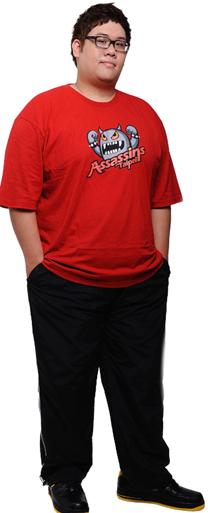

上路- Stanley
人稱上路帝王的史丹利，對線能力非常優秀，對於裝備的理解超乎常人，時常開發出讓人無解的打法。以前曾開發過弗拉迪米爾出四個海克斯科技左輪，也讓Riot Games改動道具的效果。在TPA奪冠後的隔年離開隊伍，轉往HKA。

人稱上路帝王的史丹利，對線能力非常優秀，對於裝備的理解超乎常人，時常開發出讓人無解的打法。以前曾開發過弗拉迪米爾出四個海克斯科技左輪，也讓Riot Games改動道具的效果。在TPA奪冠後的隔年離開隊伍，轉往HKA。